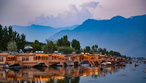
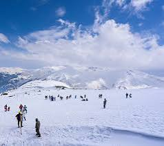
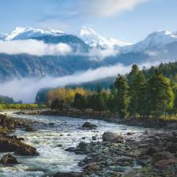
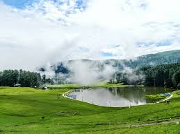
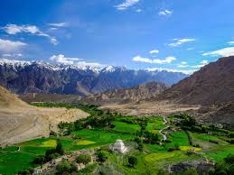
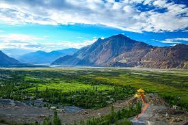

Kashmir Valley
Srinagar

- Dal Lake: Iconic lake with houseboats and shikara rides
- Shalimar Bagh and Nishat Bagh: Mughal gardens with terraced lawns and fountains
- Hazratbal Shrine: Muslim shrine with a pristine white marble mosque
- Pari Mahal: Seven terraced garden overlooking Dal Lake
Gulmarg

- Gulmarg Gondola: Cable car offering panoramic views of the Himalayas
- Gulmarg Golf Course: Highest golf course in the world
Pahalgam

- Betaab Valley: Scenic valley named after a Bollywood movie
- Aru Valley: Picturesque valley with lush meadows and trekking trails
- Lidder River: River offering opportunities for fishing and rafting
Jammu Region
Jammu City
- Vaishno Devi Temple: Hindu pilgrimage site nestled in the Trikuta Mountains
- Raghunath Temple: Largest temple complex in northern India
- Mubarak Mandi Palace: Historic palace complex with architectural blend
Patnitop

- Nathatop: Hill station offering panoramic views of snow-covered peaks
- Sanasar Lake: Lake surrounded by lush green meadows, ideal for picnics
Ladakh Region
Leh

- Leh Palace: Former royal palace offering views of Leh town and Stok Kangri range
- Shanti Stupa: Peace Pagoda with panoramic views of Leh and surroundings
- Thiksey Monastery and Hemis Monastery: Famous monasteries with ancient relics and festivals
Nubra Valley

- Diskit Monastery: Oldest and largest Buddhist monastery in Nubra Valley
- Hunder Sand Dunes: Desert landscape with double-humped Bactrian camels
Adventure Activities
- Trekking and Mountaineering: Popular treks include Kashmir Great Lakes, Tarsar Marsar, and Markha Valley
- River Rafting: White-water rafting in Lidder River (Pahalgam) and Zanskar River (Ladakh)
Festivals & Cultural Events
- Ladakh Festival: Celebrated with traditional dance, music, and archery competitions
- Tulip Festival (Srinagar): Held in April showcasing colorful tulip gardens